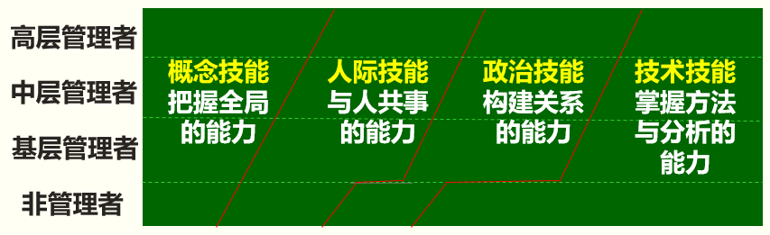
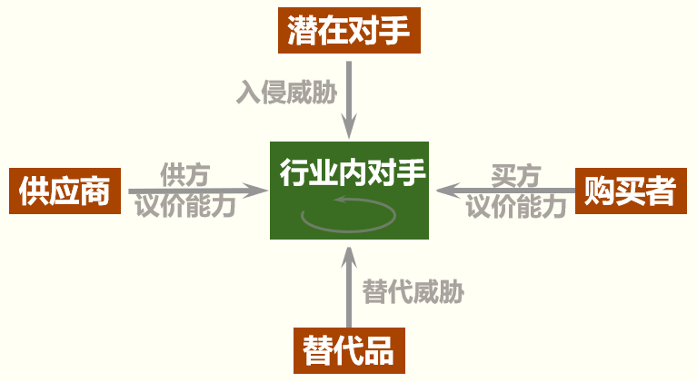
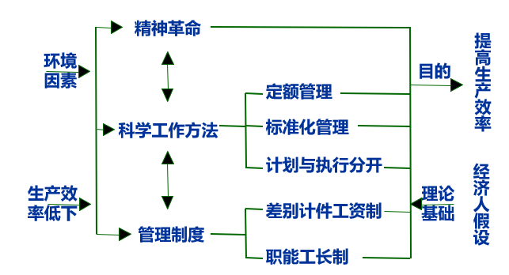
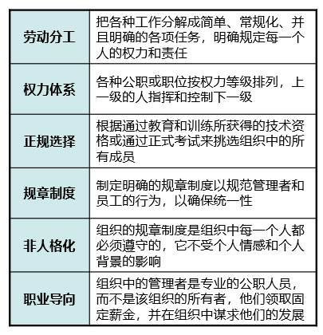
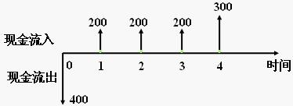
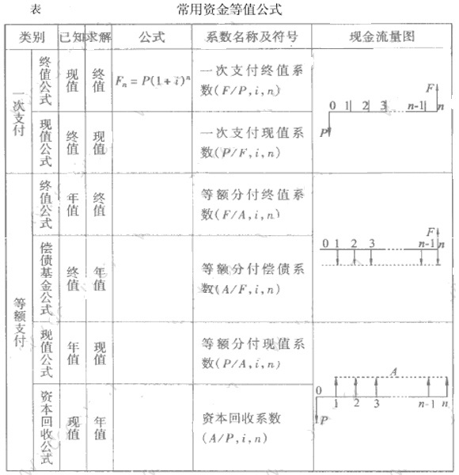
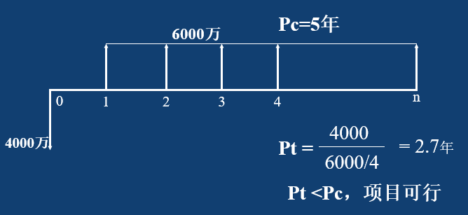
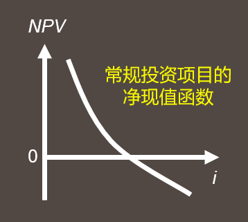

<!DOCTYPE html>
<html lang="en">
<head><meta name="generator" content="Hexo 3.9.0">
  <meta charset="utf-8">
  
  <title>经济与管理 札记 | 外野 - wryyyyyyyyyY!</title>
  <meta name="viewport" content="width=device-width, initial-scale=1, maximum-scale=1">
  <meta name="description" content="《新编经济与管理教程》一书的笔记，由概念切入，旨于能够在这资本吃人的社会站住一席之地。">
<meta name="keywords" content="学习笔记">
<meta property="og:type" content="article">
<meta property="og:title" content="经济与管理 札记">
<meta property="og:url" content="http://blog.iik.moe/2021/01/04/notes/经济与管理札记/index.html">
<meta property="og:site_name" content="外野">
<meta property="og:description" content="《新编经济与管理教程》一书的笔记，由概念切入，旨于能够在这资本吃人的社会站住一席之地。">
<meta property="og:locale" content="en">
<meta property="og:image" content="http://blog.iik.moe/2021/01/04/notes/经济与管理札记/经济与管理札记/607px-Simple_supply_and_demand.svg.png">
<meta property="og:image" content="http://blog.iik.moe/2021/01/04/notes/经济与管理札记/经济与管理札记/image-20210104095527330.png">
<meta property="og:image" content="http://blog.iik.moe/2021/01/04/notes/经济与管理札记/经济与管理札记/image-20210104100009369.png">
<meta property="og:image" content="http://blog.iik.moe/2021/01/04/notes/经济与管理札记/经济与管理札记/image-20210104102107631.png">
<meta property="og:image" content="http://blog.iik.moe/2021/01/04/notes/经济与管理札记/经济与管理札记/image-20210104102137177.png">
<meta property="og:image" content="http://blog.iik.moe/2021/01/04/notes/经济与管理札记/经济与管理札记/现金流量图.jpg">
<meta property="og:image" content="http://blog.iik.moe/2021/01/04/notes/经济与管理札记/经济与管理札记/常用资金等值公式.gif">
<meta property="og:image" content="http://blog.iik.moe/2021/01/04/notes/经济与管理札记/经济与管理札记/image-20210103210239127.png">
<meta property="og:image" content="http://blog.iik.moe/2021/01/04/notes/经济与管理札记/经济与管理札记/image-20210103213615704.png">
<meta property="og:updated_time" content="2021-01-04T04:44:28.239Z">
<meta name="twitter:card" content="summary">
<meta name="twitter:title" content="经济与管理 札记">
<meta name="twitter:description" content="《新编经济与管理教程》一书的笔记，由概念切入，旨于能够在这资本吃人的社会站住一席之地。">
<meta name="twitter:image" content="http://blog.iik.moe/2021/01/04/notes/经济与管理札记/经济与管理札记/607px-Simple_supply_and_demand.svg.png">
  
  
  

  
    <link rel="icon" href="/image/favicon.ico">
    <link rel="apple-touch-icon" href="/image/favicon.ico">
  
  <script src="//cdn.mathjax.org/mathjax/latest/MathJax.js?config=TeX-MML-AM_CHTML"></script>
  <link rel="stylesheet" href="//cdn.bootcss.com/nprogress/0.2.0/nprogress.min.css">
  <script src="//cdn.bootcss.com/nprogress/0.2.0/nprogress.min.js"></script>
  <script>
    window.addEventListener('DOMContentLoaded', function () {
      NProgress.start()
      $(document).on('readystatechange', function () {
        if (document.readyState === 'complete') NProgress.done()
      })
      var elements = $('img, script')
      var loaded = 0
      elements.on('load', function () {
        if (loaded === elements.length) NProgress.done()
        else {
          var val = ++loaded / elements.length
          NProgress.status > val ? NProgress.inc(val) : NProgress.set(val)
        }
      })
    })
  </script>

  <link rel="stylesheet" href="//cdn.bootcss.com/font-awesome/4.7.0/css/font-awesome.min.css">
  <link rel="stylesheet" href="//cdn.bootcss.com/csshake/1.5.2/csshake.min.css">
  <link rel="stylesheet" href="/libs/open-sans/styles.css">

  <link rel="stylesheet" href="/css/style.css">

  <script src="//cdn.bootcss.com/jquery/2.1.3/jquery.min.js"></script>
  <script src="//cdn.bootcss.com/scrollReveal.js/3.3.6/scrollreveal.min.js"></script>
  <script>
    $(function() {
      // Init ScrollReveal Animate
      window.sr = new ScrollReveal();
      window.sr.reveal('#profile', { viewFactor: 0, mobile: false });
      window.sr.reveal('article, .timeline, .layout-wrap', {
        reset: window.location.pathname === '/',
        delay: 100,
        useDelay: 'once',
        viewFactor: 0
      });
      window.sr.reveal('#sidebar', { delay: 200, useDelay: 'once', viewFactor: 0 });
    })
  </script>
  
  
    <link rel="stylesheet" href="//cdn.bootcss.com/lightgallery/1.6.0/css/lightgallery.min.css">
  
  
    <link rel="stylesheet" href="//cdn.bootcss.com/justifiedGallery/3.6.3/css/justifiedGallery.min.css">
  
  
  
  
  
  
    <script>
  var _hmt = _hmt || [];
  (function() {
    var hm = document.createElement("script");
    hm.src = "//hm.baidu.com/hm.js?f1fb63876cc310548f153f32652bc624";
    var s = document.getElementsByTagName("script")[0];
    s.parentNode.insertBefore(hm, s);
  })();
</script>

  


</head>
</html>
<body>
  <div id="container">
    <header id="header">
  <div id="header-main" class="header-inner">
    <div class="outer">
      <a href="/" id="logo">
        
        <span class="site-title">外野</span>
      </a>
      <nav id="main-nav">
        
          <a class="main-nav-link" href="/archives">归档</a>
        
          <a class="main-nav-link" href="/categories">目录</a>
        
          <a class="main-nav-link" href="/about">关于</a>
        
      </nav>
      
        
        <nav id="sub-nav">
          <div class="profile" id="profile-nav">
            <a id="profile-anchor" href="javascript:;">
              
              <i class="fa fa-caret-down"></i>
            </a>
          </div>
        </nav>
      
      <div id="search-form-wrap">

  <form action="//google.com/search" method="get" accept-charset="UTF-8" class="search-form"><input type="search" name="q" class="search-form-input" placeholder="Search"><button type="submit" class="search-form-submit"> </button><input type="hidden" name="sitesearch" value="http://blog.iik.moe"></form>

</div>

    </div>
  </div>
  <div id="main-nav-mobile" class="header-sub header-inner">
    <table class="menu outer">
      <tr>
        
          <td><a class="main-nav-link" href="/archives">归档</a></td>
        
          <td><a class="main-nav-link" href="/categories">目录</a></td>
        
          <td><a class="main-nav-link" href="/about">关于</a></td>
        
        <td>
          
  <!-- <form action="//google.com/search" method="get" accept-charset="UTF-8" class="search-form"><input type="search" name="q" class="search-form-input" placeholder="Search"><input type="hidden" name="sitesearch" value="http://blog.iik.moe"></form> -->


        </td>
      </tr>
    </table>
  </div>
</header>

    <div class="outer">
      
        

<aside id="profile">
  <div class="inner profile-inner">
    <div class="base-info profile-block">
      
      <h2 id="name">Kitekii</h2>
      <h3 id="title">Technic Artist</h3>
      <span id="location"><i class="fa fa-map-marker"></i>Beijing, China</span>
      <span id="bio">Brain power up!!!</span>
      <a id="follow" target="_blank" href="https://github.com/timrockefeller/">FOLLOW</a>
    </div>
    <div class="article-info profile-block">
      <div class="article-info-block">
        62
        <span>posts</span>
      </div>
      <div class="article-info-block">
        40
        <span>tags</span>
      </div>
    </div>
      
      <div class="profile-block social-links">
        <table>
          <tr>
            
            
            <td>
              <a href="https://twitter.com/kitekii_" target="_blank" title="twitter" class=tooltip >
                <i class="fa fa-twitter"></i>
              </a>
            </td>
            
            <td>
              <a href="https://weibo.com/6hyuu" target="_blank" title="weibo" class=tooltip >
                <i class="fa fa-weibo"></i>
              </a>
            </td>
            
            <td>
              <a href="https://stackoverflow.com/users/11379560/kitekii" target="_blank" title="stack-overflow" class=tooltip >
                <i class="fa fa-stack-overflow"></i>
              </a>
            </td>
            
            <td>
              <a href="https://www.reddit.com/user/kitekii" target="_blank" title="reddit" class=tooltip >
                <i class="fa fa-reddit"></i>
              </a>
            </td>
            
          </tr>
        </table>
      </div>
      
  </div>
  
  
</aside>

      
      <section id="main"><article id="post-notes/经济与管理札记" class="article article-type-post" itemscope itemprop="blogPost">
  <div class="article-inner">
    
      <!-- <div class="background"></div> -->
      
      <!-- <script>
        ;!(function($) {
          var max = 99;
          var index = Math.floor(Math.random() * max) + 1;
          $('.background').css({ backgroundImage: 'url("/css/images/article/'+ index +'.png")', opacity: 0.5 });
        })(jQuery)
      </script> -->
      
    
    
    
      <header class="article-header">
        
  
    <h1 class="article-title" itemprop="name">
      经济与管理 札记
    </h1>
  


        
          <div class="article-meta">
            
  <div class="article-date">
    <i class="fa fa-calendar"></i>
    <a href="/2021/01/04/notes/经济与管理札记/">
      <time datetime="2021-01-03T16:00:00.000Z" itemprop="datePublished">2021-01-04</time>
    </a>
  </div>


            
  <div class="article-category">
    <i class="fa fa-folder"></i>
      <a class="article-category-link" href="/categories/札记阁/">札记阁</a>
  </div>


            
  <div class="article-tag">
    <i class="fa fa-tag"></i>
    <a class="tag-link" href="/tags/学习笔记/">学习笔记</a>
  </div>


          </div>
        
      </header>
    
    

    <div class="article-entry" itemprop="articleBody">
    
      
      <p>《新编经济与管理教程》一书的笔记，由概念切入，旨于能够在这资本吃人的社会站住一席之地。</p>
<a id="more"></a>
<hr>

<h3 id="0-概论"><a href="#0-概论" class="headerlink" title="0 概论"></a>0 概论</h3><h4 id="0-1-经济学的定义"><a href="#0-1-经济学的定义" class="headerlink" title="0.1 经济学的定义"></a>0.1 经济学的定义</h4><blockquote>
<p>经济学是关于选择的科学，它研究人们如何进行选择，以便使用稀缺的或有限的生产资源（劳动、设备、技术知识等）来生产各种商品，并分配这些物品以供消费。</p>
<p>经济学研究社会如何使用稀缺资源来生产有价值的商品，并把它们在不同的人之间分配。</p>
</blockquote>
<h4 id="0-2-经济学的基本假设"><a href="#0-2-经济学的基本假设" class="headerlink" title="0.2 经济学的基本假设"></a>0.2 经济学的基本假设</h4><blockquote>
<p>理性人假定，完全信息假定，市场出清假定</p>
</blockquote>
<h4 id="0-3-经济学与管理学的区别与联系"><a href="#0-3-经济学与管理学的区别与联系" class="headerlink" title="0.3 经济学与管理学的区别与联系"></a>0.3 经济学与管理学的区别与联系</h4><hr>

<h3 id="1-供求"><a href="#1-供求" class="headerlink" title="1 供求"></a>1 供求</h3><h4 id="1-1-各种经济方式围绕解决的三个基本问题？"><a href="#1-1-各种经济方式围绕解决的三个基本问题？" class="headerlink" title="1.1 各种经济方式围绕解决的三个基本问题？"></a>1.1 各种经济方式围绕解决的三个基本问题？</h4><blockquote>
<p>生产什么？生产多少？</p>
<p>如何生产？</p>
<p>为谁生产？</p>
</blockquote>
<h4 id="1-2-什么是需求、需求量？"><a href="#1-2-什么是需求、需求量？" class="headerlink" title="1.2 什么是需求、需求量？"></a>1.2 什么是需求、需求量？</h4><blockquote>
<p>消费者在一定价格水平下对某种商品有支付能力的需要。</p>
</blockquote>
<h4 id="1-3-影响需求量的因素？"><a href="#1-3-影响需求量的因素？" class="headerlink" title="1.3 影响需求量的因素？"></a>1.3 影响需求量的因素？</h4><h4 id="1-4-需求函数、需求曲线、需求定理、需求和需求量的变动？"><a href="#1-4-需求函数、需求曲线、需求定理、需求和需求量的变动？" class="headerlink" title="1.4 需求函数、需求曲线、需求定理、需求和需求量的变动？"></a>1.4 需求函数、需求曲线、需求定理、需求和需求量的变动？</h4><h4 id="1-5-什么是供给、供给量？"><a href="#1-5-什么是供给、供给量？" class="headerlink" title="1.5 什么是供给、供给量？"></a>1.5 什么是供给、供给量？</h4><h4 id="1-6-影响供给量的因素？"><a href="#1-6-影响供给量的因素？" class="headerlink" title="1.6 影响供给量的因素？"></a>1.6 影响供给量的因素？</h4><h4 id="1-7-供给函数、供给曲线、供给定理、供给和供给量的变动？"><a href="#1-7-供给函数、供给曲线、供给定理、供给和供给量的变动？" class="headerlink" title="1.7 供给函数、供给曲线、供给定理、供给和供给量的变动？"></a>1.7 供给函数、供给曲线、供给定理、供给和供给量的变动？</h4><h4 id="1-8-什么是均衡价格？"><a href="#1-8-什么是均衡价格？" class="headerlink" title="1.8 什么是均衡价格？"></a>1.8 什么是<strong>均衡价格</strong>？</h4><p></p>
<h4 id="1-9-供求定理？"><a href="#1-9-供求定理？" class="headerlink" title="1.9 供求定理？"></a>1.9 供求定理？</h4><h4 id="1-10-限制价格可能导致的结果？"><a href="#1-10-限制价格可能导致的结果？" class="headerlink" title="1.10 限制价格可能导致的结果？"></a>1.10 限制价格可能导致的结果？</h4><h4 id="1-11-支持价格可能导致的结果？"><a href="#1-11-支持价格可能导致的结果？" class="headerlink" title="1.11 支持价格可能导致的结果？"></a>1.11 支持价格可能导致的结果？</h4><h4 id="1-12-征税（补贴）对价格和销售量的影响？🎲计算"><a href="#1-12-征税（补贴）对价格和销售量的影响？🎲计算" class="headerlink" title="1.12 征税（补贴）对价格和销售量的影响？🎲计算"></a>1.12 <strong>征税（补贴）对价格和销售量的影响</strong>？<kbd>🎲计算</kbd></h4><h4 id="1-13-需求弹性的定义-需求价格弹性的计算"><a href="#1-13-需求弹性的定义-需求价格弹性的计算" class="headerlink" title="1.13 需求弹性的定义,需求价格弹性的计算"></a>1.13 需求弹性的定义,需求价格弹性的计算</h4><h4 id="1-14-需求价格弹性对收入的影响"><a href="#1-14-需求价格弹性对收入的影响" class="headerlink" title="1.14 需求价格弹性对收入的影响?"></a>1.14 需求价格弹性对收入的影响?</h4><blockquote>
<ol>
<li>均衡价格是怎样形成的？“影响价格的因素很多，但归根到底，决定于供给与需求”。这话对不对？为什么？</li>
<li>什么是需求弹性？什么是需求价格弹性？在制定企业决策中的作用是什么？</li>
<li>什么是点弹性和弧弹性？为什么要区分这两种弹性？</li>
<li>需求曲线的斜率大，弹性就小；斜率小，弹性就大”，这个说法是否错误？为什么？</li>
</ol>
</blockquote>
<hr>

<h3 id="2-生产成本"><a href="#2-生产成本" class="headerlink" title="2 生产成本"></a>2 生产成本</h3><h4 id="2-1-生产函数"><a href="#2-1-生产函数" class="headerlink" title="2.1 生产函数"></a>2.1 生产函数</h4><h4 id="2-2-总产量、平均产量、边际产量及相互关系"><a href="#2-2-总产量、平均产量、边际产量及相互关系" class="headerlink" title="2.2 总产量、平均产量、边际产量及相互关系"></a>2.2 <strong>总产量、平均产量、边际产量及相互关系</strong></h4><h4 id="2-3-单一可变投入要素最优投入量的确定"><a href="#2-3-单一可变投入要素最优投入量的确定" class="headerlink" title="2.3 单一可变投入要素最优投入量的确定"></a>2.3 单一可变投入要素最优投入量的确定</h4><h4 id="2-4-边际收益递减规律"><a href="#2-4-边际收益递减规律" class="headerlink" title="2.4 边际收益递减规律"></a>2.4 边际收益递减规律</h4><h4 id="2-5-经济规模"><a href="#2-5-经济规模" class="headerlink" title="2.5 经济规模"></a>2.5 经济规模</h4><h4 id="2-6-等产量线"><a href="#2-6-等产量线" class="headerlink" title="2.6 等产量线"></a>2.6 等产量线</h4><h4 id="2-7-边际替代率"><a href="#2-7-边际替代率" class="headerlink" title="2.7 边际替代率"></a>2.7 边际替代率</h4><h4 id="2-8-等成本曲线"><a href="#2-8-等成本曲线" class="headerlink" title="2.8 等成本曲线"></a>2.8 等成本曲线</h4><h4 id="2-9-多种投入要素最佳组合的确定"><a href="#2-9-多种投入要素最佳组合的确定" class="headerlink" title="2.9 多种投入要素最佳组合的确定"></a>2.9 多种投入要素最佳组合的确定</h4><h4 id="2-10-有关成本概念"><a href="#2-10-有关成本概念" class="headerlink" title="2.10 有关成本概念"></a>2.10 有关成本概念</h4><p>相关成本与非相关成本</p>
<p>机会成本与会计成本</p>
<p>增量成本与沉没成本</p>
<p>变动成本与固定成本</p>
<p>短期成本与长期成本</p>
<h4 id="2-11-增量成本的决策方法"><a href="#2-11-增量成本的决策方法" class="headerlink" title="2.11 增量成本的决策方法?"></a>2.11 增量成本的决策方法?</h4><p>贡献分析法、盈亏分界点分析法和边际分析法</p>
<hr>

<h3 id="3-管理概述"><a href="#3-管理概述" class="headerlink" title="3 管理概述"></a>3 管理概述</h3><h4 id="3-1-管理定义的构成要素"><a href="#3-1-管理定义的构成要素" class="headerlink" title="3.1 管理定义的构成要素"></a>3.1 管理定义的构成要素</h4><p>环境、只能、目标、资源</p>
<h4 id="3-2-管理的本质"><a href="#3-2-管理的本质" class="headerlink" title="3.2 管理的本质"></a>3.2 管理的本质</h4><p>独立性、融合性</p>
<p>通过与他人一起工作，实现组织的目标</p>
<h4 id="3-3-管理的性质"><a href="#3-3-管理的性质" class="headerlink" title="3.3 管理的性质"></a>3.3 管理的性质</h4><p>科学性、艺术性</p>
<h4 id="3-4-管理的基本职能"><a href="#3-4-管理的基本职能" class="headerlink" title="3.4 管理的基本职能"></a>3.4 管理的基本职能</h4><ul>
<li><p>计划</p>
<p>定义目标、指定战略、构建具体执行计划并协调行动</p>
<p>作用：</p>
<ul>
<li>明确组织成员行动的方向和方式</li>
<li>为落实和协调组织活动提供保证</li>
<li>为组织资源的筹措和整合提供依据</li>
<li>为检查与控制组织活动奠定基础</li>
</ul>
</li>
<li><p>组织</p>
<ul>
<li>决定要执行哪些任务</li>
<li>决定谁来完成，任务如何分配</li>
<li>决定谁像谁汇报，在哪里制定决策</li>
</ul>
</li>
<li><p>领导</p>
<ul>
<li>激励员工： <em>需要层次理论</em>→“双因素理论”</li>
<li>指挥行动</li>
<li>选择有效的沟通渠道</li>
<li>解决员工之间的冲突</li>
</ul>
</li>
<li><p>控制</p>
<ul>
<li>衡量绩效</li>
<li>实际绩效与标准比较</li>
<li>纠正实际绩效与标准的偏差</li>
</ul>
</li>
</ul>
<h4 id="3-5-管理者具备的技能"><a href="#3-5-管理者具备的技能" class="headerlink" title="3.5 管理者具备的技能"></a>3.5 管理者具备的技能</h4><ol>
<li>概念技能</li>
<li>人际技能</li>
<li>技术技能</li>
</ol>
<p></p>
<h4 id="3-6-管理环境：组织的一般环境——PEST分析"><a href="#3-6-管理环境：组织的一般环境——PEST分析" class="headerlink" title="3.6 管理环境：组织的一般环境——PEST分析"></a>3.6 管理环境：组织的一般环境——PEST分析</h4><ul>
<li>政策与法律：如环境保护、社会保障、反不正当竞争法以及国家的产业政策等</li>
<li>经济：如增长率、政府收支、外贸收支及汇率、利率、通货膨胀率等</li>
<li>社会：如人口、就业观念、消费观念等</li>
<li>技术：重大科学技术成果的影响等</li>
</ul>
<h4 id="3-7-管理环境：波特的五力模型"><a href="#3-7-管理环境：波特的五力模型" class="headerlink" title="3.7 管理环境：波特的五力模型"></a>3.7 管理环境：波特的五力模型</h4><p></p>
<h4 id="3-8-SWOT-管理环境分析法📊案例"><a href="#3-8-SWOT-管理环境分析法📊案例" class="headerlink" title="3.8 SWOT 管理环境分析法📊案例"></a>3.8 <strong>SWOT 管理环境分析法</strong><kbd>📊案例</kbd></h4><table>
<thead>
<tr>
<th></th>
<th><strong>优势 Strength</strong></th>
<th><strong>劣势 Weakness</strong></th>
</tr>
</thead>
<tbody>
<tr>
<td><strong>机会<br>Opportunity</strong></td>
<td>· SO战略（增长性战略）<br>依靠内部优势<br>利用外部机会</td>
<td>· WO战略（扭转型战略）<br>利用外部机会<br>克服内部劣势</td>
</tr>
<tr>
<td><strong>威胁<br>Threat</strong></td>
<td>· ST战略（多元化战略）<br>依靠内部优势<br>回避外部威胁</td>
<td>· WT战略（防御型战略）<br>减少内部优势<br>回避外部威胁</td>
</tr>
</tbody>
</table>
<h4 id="3-9-管理理论思想演变"><a href="#3-9-管理理论思想演变" class="headerlink" title="3.9 管理理论思想演变"></a>3.9 管理理论思想演变</h4><p>$$<br>\left.<br>\begin{array}{lr}<br>    早期的管理思想及管理学理论的萌芽 \<br>    管理学理论的产生<br>\end{array}<br>\right<br>} 现代管理理论<br>$$</p>
<ul>
<li><p>早期管理思想及管理学理论的萌芽</p>
<p>| 中国早期管理思想                       | 西方早期管理思想                         |<br>| ————————————– | —————————————- |<br>| 以“人”为中心的儒家管理思想             | 苏格拉底的《对话录》–<strong>管理具有普遍性</strong> |<br>| 以“道”为中心的道家管理思想             | 托马斯.莫尔的&lt;乌托邦&gt;(1516)              |<br>| 以“法治”为基础的法家管理思想           | 亚当.斯密的&lt;国富论&gt;(1776)                |<br>| 以“谋略”为中心《孙子兵法》中的管理思想 | 大卫.李嘉图的群氓理论                    |</p>
</li>
<li><p>管理学理论的产生</p>
<ol>
<li><p>科学管理理论 （泰勒）</p>
<p></p>
</li>
<li><p>组织管理理论（法约尔）</p>
<p></p>
<p>《十四条一般原则》：系统性和理论性更强，后人根据他建立的构架，建立了管理学并把它引入了课堂</p>
<p><strong>局限性：</strong>管理原则缺乏弹性，以至于有时实际管理工作者无法完全遵守。</p>
</li>
<li><p>行为科学理论（梅约）</p>
</li>
</ol>
</li>
<li><p>现代管理理论</p>
<p>特点：系统化、重视人的因素、强调信息、先进的理论方法应用、重视“非正式组织”的作用</p>
<p>效率与效果的结合、理论联系实际、强调预见性、创新、权力集中</p>
</li>
</ul>
<hr>

<h3 id="4-运营管理"><a href="#4-运营管理" class="headerlink" title="4 运营管理"></a>4 运营管理</h3><p>库存管理</p>
<p>经济订购批量 EOQ</p>
<hr>

<h3 id="5-质量管理"><a href="#5-质量管理" class="headerlink" title="5 质量管理"></a>5 质量管理</h3><hr>

<h3 id="6-投资方案的经济评价"><a href="#6-投资方案的经济评价" class="headerlink" title="6 投资方案的经济评价"></a>6 投资方案的经济评价</h3><h4 id="6-1-现金流量？"><a href="#6-1-现金流量？" class="headerlink" title="6.1 现金流量？"></a>6.1 现金流量？</h4><p>将投资项目视为一个独立系统时流入和流出该项目系统的<strong>现金活动</strong></p>
<p><strong>现金流入</strong>（正现金流量）：投资方案所引起的项目现金收入的增加额。</p>
<p><strong>现金流出</strong>（负现金流量）：投资方案所引起的项目现金支出的增加值。</p>
<p><strong>净现金流量</strong>：同一时点（现金流入-现金流出）</p>
<h4 id="6-2-现金流量图？"><a href="#6-2-现金流量图？" class="headerlink" title="6.2 现金流量图？"></a>6.2 现金流量图？</h4><p></p>
<h4 id="6-3-单利和复利"><a href="#6-3-单利和复利" class="headerlink" title="6.3 单利和复利"></a>6.3 单利和复利</h4><p>单利(Simple Interest)：仅用本金计算利息，利息不再生利息。</p>
<p>复利(Compound Interest)：以本金与累计利息之和为基数计算利息，即利上加利。</p>
<h4 id="6-4-名义利率和实际利率"><a href="#6-4-名义利率和实际利率" class="headerlink" title="6.4 名义利率和实际利率"></a>6.4 名义利率和实际利率</h4><p>名义利率 i：计息周期的利率乘以每年的计息周期数。</p>
<p>实际利率r：每年的计息周期数用复利计息所得到的年利率。<br>$$<br>r = (1+\frac{i}{m})^m -1<br>$$</p>
<h4 id="6-5-资金等值计算🎲计算"><a href="#6-5-资金等值计算🎲计算" class="headerlink" title="6.5 资金等值计算🎲计算"></a>6.5 <strong>资金等值计算</strong><kbd>🎲计算</kbd></h4><ul>
<li><strong>现值 P</strong>：将未来时点上的资金额换算成的现在时点上的资金额。</li>
<li><strong>终值 F</strong>：与现值等价的未来时点上的资金额。</li>
<li><strong>年金 A</strong></li>
<li>贴现（折现）：把未来时点发生的资金用资金时间价值的尺度折算成现在时点资金额的过程。</li>
<li>资金等值计算：按照一定折现率，把不同时点上的资金额换算成一次支付或等额支付系列的过程。</li>
</ul>
<p></p>
<h4 id="6-6-经济评价指标分类"><a href="#6-6-经济评价指标分类" class="headerlink" title="6.6 经济评价指标分类"></a>6.6 经济评价指标分类</h4><p>静态、动态</p>
<h4 id="6-7-静态投资回收期"><a href="#6-7-静态投资回收期" class="headerlink" title="6.7 静态投资回收期"></a>6.7 静态投资回收期</h4><ul>
<li>净现金流量 NCF = CI - CO</li>
</ul>
<p>$$<br>P_t = 累计净现金流量开始出现正值的年份数 - 1 + \frac{上年累计净现金流量的绝对值}{当年净现金流量}<br>$$</p>
<ul>
<li><p>特例：</p>
<p></p>
</li>
</ul>
<p>$$<br>P_t = \frac{I}{R}<br>$$</p>
<p>优点：经济意义直观，易于理解，计算简便</p>
<p>缺点：不能全面地、完整地反映项目一生的经济效果，同时，没有考虑资金的时间价值。</p>
<h4 id="6-8-简单收益率"><a href="#6-8-简单收益率" class="headerlink" title="6.8 简单收益率"></a>6.8 简单收益率</h4><ol>
<li><p><strong>投资利润率</strong>：指项目达到设计能力后一个正常生产年份的年利润总额或年平均利润总额与项目总投资的比率。<br>​   计算：投资利润率 = 年利润总额或年平均利润总额 / 总投资<br>​   判别标准：大于等于行业标准投资利润率或平均投资利润率</p>
</li>
<li><p><strong>投资利税率</strong>：指项目达到设计能力后一个正常生产年份的年利税总额或年平均利税总额与项目总投资的比率。<br>​   计算：投资利税率 = 年利税总额或年平均利税总额/总投资</p>
</li>
<li><p><strong>资本金利润</strong>率：指项目达到设计能力后一个正常生产年份的年利润总额或年平均利润总额与项目资本金的比率。<br>​   计算：投资利润率 = 年利润总额或年平均利润总额 / 资本金</p>
</li>
</ol>
<h4 id="6-9-净现值🎲计算"><a href="#6-9-净现值🎲计算" class="headerlink" title="6.9 净现值🎲计算"></a>6.9 <strong>净现值</strong><kbd>🎲计算</kbd></h4><p>$$<br>NPV=\sum^{n}_{t=0}{(CI-CO)_t(1+i_c)^{-t}}<br>$$<br>​    i_c: 基准收益率（最低期望收益率，目标收益率）</p>
<p></p>
<h4 id="6-10-MARR：基准折现率"><a href="#6-10-MARR：基准折现率" class="headerlink" title="6.10 MARR：基准折现率"></a>6.10 <strong>MARR</strong>：基准折现率</h4><p>基准折现率 <code>i_c</code> 是净现值计算中反映资金时间价值的基准参数，是导致投资行为发生所要求的最低投资回报率，称为最低要求收益率。</p>
<h4 id="6-11-NPVR：净现值率"><a href="#6-11-NPVR：净现值率" class="headerlink" title="6.11 NPVR：净现值率"></a>6.11 NPVR：净现值率</h4><p>$$<br>NPVR = \frac{NPV}{I_P} = \frac{\sum^{n}_{t=0}{(CI-CO)<em>t(P/F,i,n)}}{\sum^n</em>{t=0}{I_t(P/F,i,n)}}<br>$$<br>​    该指标反映了项目的投资效率。<br>​    在企业资金受限制的情况下对项目的优劣情况比较时非常有效。<br>​    <code>I_P</code> 为总投资现值。</p>
<h4 id="6-12-内部收益率-IRR🎲计算"><a href="#6-12-内部收益率-IRR🎲计算" class="headerlink" title="6.12 内部收益率 IRR🎲计算"></a>6.12 <strong>内部收益率</strong> IRR<kbd>🎲计算</kbd></h4><p>​    项目在计算期内各年净现金流量现值累计等于零时的折现率。<br>$$<br>\sum^n_{t=0}{(CI-CO)_t(I+IRR)^{-t}} = 0<br>$$<br>​    确定试算的折现率，通过试算，估计出两个折现率 i1 和 i2（i1 &lt; i2)，使得 i = i1 时，NPV1 &gt; 0；i = i2 时，NPV2 &lt; 0。则，<br>$$<br>IRR = i_1+\frac{NPV_1}{NPV_1+|NPV2|}(i_2-i_1)<br>$$</p>
<ul>
<li>i1 要对应 NPV1 &gt; 0，i2 要对应 NPV2 &lt; 0</li>
<li>i2 - i1 ≤ 5%，以避免过大的误差</li>
</ul>
<p>内部收益率全面考察了项目在整个计算期内的经济状况，并克服了NPV指标受主观因素影响的缺点。</p>
<hr>

<h3 id="7-项目管理"><a href="#7-项目管理" class="headerlink" title="7 项目管理"></a>7 项目管理</h3><h4 id="7-1-项目"><a href="#7-1-项目" class="headerlink" title="7.1 项目"></a>7.1 项目</h4><h4 id="7-2-项目管理"><a href="#7-2-项目管理" class="headerlink" title="7.2 项目管理"></a>7.2 项目管理</h4><h4 id="7-3-网络图绘制与计算🎲计算"><a href="#7-3-网络图绘制与计算🎲计算" class="headerlink" title="7.3 网络图绘制与计算🎲计算"></a>7.3 网络图绘制与计算<kbd>🎲计算</kbd></h4>
    
    </div>
    <footer class="article-footer">
      
      <div class="share-container">
  
  
  
</div>

  <a data-url="http://blog.iik.moe/2021/01/04/notes/经济与管理札记/" data-id="ckji2ytx6002j4chy2xv6tp26" class="article-share-link"><i class="fa fa-share"></i>Share</a>
<script>
  (function ($) {
    // Prevent duplicate binding
    if (typeof(__SHARE_BUTTON_BINDED__) === 'undefined' || !__SHARE_BUTTON_BINDED__) {
      __SHARE_BUTTON_BINDED__ = true;
    } else {
      return;
    }
    $('body').on('click', function() {
      $('.article-share-box.on').removeClass('on');
    }).on('click', '.article-share-link', function(e) {
      e.stopPropagation();

      var $this = $(this),
        url = $this.attr('data-url'),
        encodedUrl = encodeURIComponent(url),
        id = 'article-share-box-' + $this.attr('data-id'),
        offset = $this.offset(),
        box;

      if ($('#' + id).length) {
        box = $('#' + id);
        if (box.hasClass('on')){
          box.removeClass('on');
          return;
        }
      } else {
        var html = [
          '<div id="' + id + '" class="article-share-box">',
            '<input class="article-share-input" value="' + url + '">',
            '<div class="article-share-links">',
              '<a href="https://twitter.com/intent/tweet?url=' + encodedUrl + '" class="fa fa-twitter article-share-twitter" target="_blank" title="Twitter"></a>',
              '<a href="https://www.facebook.com/sharer.php?u=' + encodedUrl + '" class="fa fa-facebook article-share-facebook" target="_blank" title="Facebook"></a>',
              '<a href="http://pinterest.com/pin/create/button/?url=' + encodedUrl + '" class="fa fa-pinterest article-share-pinterest" target="_blank" title="Pinterest"></a>',
              '<a href="https://plus.google.com/share?url=' + encodedUrl + '" class="fa fa-google article-share-google" target="_blank" title="Google+"></a>',
            '</div>',
          '</div>'
        ].join('');

        box = $(html);

        $('body').append(box);
      }

      $('.article-share-box.on').hide();

      box.css({
        top: offset.top + 25,
        left: offset.left
      }).addClass('on');

    }).on('click', '.article-share-box', function (e) {
      e.stopPropagation();
    }).on('click', '.article-share-box-input', function () {
      $(this).select();
    }).on('click', '.article-share-box-link', function (e) {
      e.preventDefault();
      e.stopPropagation();

      window.open(this.href, 'article-share-box-window-' + Date.now(), 'width=500,height=450');
    });
  })(jQuery);
</script>


      
  


    </footer>
  </div>
  
    
<nav id="article-nav">
  
  
    <a href="/2021/01/01/bio/NewYear2021/" id="article-nav-older" class="article-nav-link-wrap">
      <strong class="article-nav-caption">Older</strong>
      <div class="article-nav-title">新年新气象</div>
    </a>
  
</nav>


  
</article>


  
  
    <section id="comments"><!-- <link rel="stylesheet" href="https://imsun.github.io/gitment/style/default.css">
  <script src="https://imsun.github.io/gitment/dist/gitment.browser.js"></script> -->
  <!-- <link rel="stylesheet" href="https://billts.site/extra_css/gitment.css">
  <script src="https://billts.site/js/gitment.js"></script> -->
  <!-- <link rel="stylesheet" href="https://jjeejj.github.io/css/gitment.css">
  <script src="https://www.wenjunjiang.win/js/gitment.js"></script> -->
  <!-- <script>
    var gitment = new Gitment({
      owner: 'timrockefeller',
      repo: 'timrockefeller.github.io',
      oauth: {
        client_id: 'a688b926cb46e56975d4',
        client_secret: 'ea63339d43ee4bf2d959d37a886a1c8c19e3709d',
      },
      id: '经济与管理 札记'
    })
    gitment.render('comments')
  </script> --></section>
  


</section>
      
        
<aside id="sidebar">
  
    
  <div class="widget-wrap">
    <h3 class="widget-title">recent</h3>
    <div class="widget">
      <ul id="recent-post" class="">
        
          <li>
            
            <div class="item-thumbnail">
              <a href="/2021/01/04/notes/经济与管理札记/" class="thumbnail">
  
  
    <span class="thumbnail-image thumbnail-none"></span>
  
</a>

            </div>
            
            <div class="item-inner">
              <p class="item-category"><a class="article-category-link" href="/categories/札记阁/">札记阁</a></p>
              <p class="item-title"><a href="/2021/01/04/notes/经济与管理札记/" class="title">经济与管理 札记</a></p>
              <p class="item-date"><time datetime="2021-01-03T16:00:00.000Z" itemprop="datePublished">2021-01-04</time></p>
            </div>
          </li>
        
          <li>
            
            <div class="item-thumbnail">
              <a href="/2021/01/01/bio/NewYear2021/" class="thumbnail">
  
  
    <span class="thumbnail-image thumbnail-none"></span>
  
</a>

            </div>
            
            <div class="item-inner">
              <p class="item-category"><a class="article-category-link" href="/categories/日记本/">日记本</a></p>
              <p class="item-title"><a href="/2021/01/01/bio/NewYear2021/" class="title">新年新气象</a></p>
              <p class="item-date"><time datetime="2020-12-31T16:00:00.000Z" itemprop="datePublished">2021-01-01</time></p>
            </div>
          </li>
        
          <li>
            
            <div class="item-thumbnail">
              <a href="/2020/12/09/coding/ECS/BuildingAnECS.2/" class="thumbnail">
  
  
    <span style="background-image:url(https://i.loli.net/2020/12/09/QDmhs8JEvOqLFg9.jpg)" alt="手撕ECS #2: Archetypes and Vectorization" class="thumbnail-image"></span>
  
</a>

            </div>
            
            <div class="item-inner">
              <p class="item-category"><a class="article-category-link" href="/categories/语法糖/">语法糖</a></p>
              <p class="item-title"><a href="/2020/12/09/coding/ECS/BuildingAnECS.2/" class="title">手撕ECS #2: Archetypes and Vectorization</a></p>
              <p class="item-date"><time datetime="2020-12-09T09:14:05.896Z" itemprop="datePublished">2020-12-09</time></p>
            </div>
          </li>
        
          <li>
            
            <div class="item-thumbnail">
              <a href="/2020/12/09/coding/ECS/BuildingAnECS.1/" class="thumbnail">
  
  
    <span style="background-image:url(https://i.loli.net/2020/12/09/Cry7zqbtpWHVGYE.jpg)" alt="手撕ECS #1: Types, Hierarchies and Prefabs" class="thumbnail-image"></span>
  
</a>

            </div>
            
            <div class="item-inner">
              <p class="item-category"><a class="article-category-link" href="/categories/语法糖/">语法糖</a></p>
              <p class="item-title"><a href="/2020/12/09/coding/ECS/BuildingAnECS.1/" class="title">手撕ECS #1: Types, Hierarchies and Prefabs</a></p>
              <p class="item-date"><time datetime="2020-12-09T06:38:41.633Z" itemprop="datePublished">2020-12-09</time></p>
            </div>
          </li>
        
          <li>
            
            <div class="item-thumbnail">
              <a href="/2020/11/22/comment/refrain/" class="thumbnail">
  
  
    <span class="thumbnail-image thumbnail-none"></span>
  
</a>

            </div>
            
            <div class="item-inner">
              <p class="item-category"></p>
              <p class="item-title"><a href="/2020/11/22/comment/refrain/" class="title"></a></p>
              <p class="item-date"><time datetime="2020-11-21T16:00:00.000Z" itemprop="datePublished">2020-11-22</time></p>
            </div>
          </li>
        
      </ul>
    </div>
  </div>


  
    
  <div class="widget-wrap">
    <h3 class="widget-title">categories</h3>
    <div class="widget">
      <ul class="category-list"><li class="category-list-item"><a class="category-list-link" href="/categories/写生架/">写生架</a><span class="category-list-count">2</span></li><li class="category-list-item"><a class="category-list-link" href="/categories/日记本/">日记本</a><span class="category-list-count">12</span></li><li class="category-list-item"><a class="category-list-link" href="/categories/札记阁/">札记阁</a><span class="category-list-count">7</span></li><li class="category-list-item"><a class="category-list-link" href="/categories/语法糖/">语法糖</a><span class="category-list-count">36</span></li></ul>
    </div>
  </div>


  
    
  <div class="widget-wrap">
    <h3 class="widget-title">tag cloud</h3>
    <div class="widget tagcloud">
      <a href="/tags/C/" style="font-size: 11.67px;">C++</a> <a href="/tags/CG/" style="font-size: 20px;">CG</a> <a href="/tags/CV/" style="font-size: 10px;">CV</a> <a href="/tags/ECS/" style="font-size: 10px;">ECS</a> <a href="/tags/Graphics/" style="font-size: 11.67px;">Graphics</a> <a href="/tags/Keras/" style="font-size: 11.67px;">Keras</a> <a href="/tags/ML/" style="font-size: 15px;">ML</a> <a href="/tags/OpenGL/" style="font-size: 13.33px;">OpenGL</a> <a href="/tags/OpengGL/" style="font-size: 10px;">OpengGL</a> <a href="/tags/SFM/" style="font-size: 10px;">SFM</a> <a href="/tags/Shader/" style="font-size: 13.33px;">Shader</a> <a href="/tags/Tutor/" style="font-size: 10px;">Tutor</a> <a href="/tags/Unity/" style="font-size: 11.67px;">Unity</a> <a href="/tags/anime/" style="font-size: 11.67px;">anime</a> <a href="/tags/c/" style="font-size: 10px;">c++</a> <a href="/tags/cmake/" style="font-size: 11.67px;">cmake</a> <a href="/tags/database/" style="font-size: 10px;">database</a> <a href="/tags/git/" style="font-size: 10px;">git</a> <a href="/tags/hexo/" style="font-size: 11.67px;">hexo</a> <a href="/tags/illustrate/" style="font-size: 11.67px;">illustrate</a> <a href="/tags/init/" style="font-size: 13.33px;">init</a> <a href="/tags/java/" style="font-size: 16.67px;">java</a> <a href="/tags/nodejs/" style="font-size: 10px;">nodejs</a> <a href="/tags/opencv/" style="font-size: 10px;">opencv</a> <a href="/tags/oracle/" style="font-size: 15px;">oracle</a> <a href="/tags/rust/" style="font-size: 10px;">rust</a> <a href="/tags/shader/" style="font-size: 10px;">shader</a> <a href="/tags/sklearn/" style="font-size: 10px;">sklearn</a> <a href="/tags/tomcat/" style="font-size: 10px;">tomcat</a> <a href="/tags/wacom/" style="font-size: 10px;">wacom</a> <a href="/tags/学习笔记/" style="font-size: 10px;">学习笔记</a> <a href="/tags/小作文/" style="font-size: 10px;">小作文</a> <a href="/tags/求职/" style="font-size: 10px;">求职</a> <a href="/tags/游戏开发/" style="font-size: 10px;">游戏开发</a> <a href="/tags/琐事/" style="font-size: 15px;">琐事</a> <a href="/tags/碎碎念/" style="font-size: 18.33px;">碎碎念</a> <a href="/tags/艺类/" style="font-size: 11.67px;">艺类</a> <a href="/tags/课业/" style="font-size: 10px;">课业</a> <a href="/tags/购物清单/" style="font-size: 10px;">购物清单</a> <a href="/tags/高考-list/" style="font-size: 10px;">高考 list</a>
    </div>
  </div>


  
    
  <div class="widget-wrap widget-list">
    <h3 class="widget-title">links</h3>
    <div class="widget">
      <ul>
        
          <li>
            <a href="https://dashjay.netlify.com" target="_blank">DashJay</a>
          </li>
        
          <li>
            <a href="http://www.jason233.top:233" target="_blank">Laravel</a>
          </li>
        
          <li>
            <a href="https://jarao.work" target="_blank">Jarao</a>
          </li>
        
          <li>
            <a href="https://measureds.github.io" target="_blank">Measureds</a>
          </li>
        
      </ul>
    </div>
  </div>


  
</aside>
<div id="toTop" class="fa fa-angle-up"></div>


      
    </div>
    <footer id="footer">
  <div class="outer">
    <div id="footer-info" class="inner">
      &copy; 2021 Made with <i class="fa fa-heart throb" style="color: #d43f57;"></i> by Kitekii<br>
      Powered by <a href="https://hexo.io/" target="_blank">Hexo</a>. Theme by <a href="https://github.com/MoeFE/Hexo-Theme-MoeIcarus" target="_blank">MoeIcarus</a><br>
      
        <!-- <script src="https://api.quq.cat/hitokoto"></script>
<div id="hitokoto"><script defer>hitokoto()</script></div> -->
<p id="hitokoto">:D 获取中...</p>
<script src="https://v1.hitokoto.cn/?encode=js&select=%23hitokoto" defer></script>
      
    </div>
  </div>
</footer>

    
  

<!--  UPDATE: switch to gitalk @ 2020.12.09 -->
  <link rel="stylesheet" href="https://cdn.jsdelivr.net/npm/gitalk@1/dist/gitalk.css">
  <script src="https://cdn.jsdelivr.net/npm/gitalk@1/dist/gitalk.min.js"></script>
  <script>
    const gitalk = new Gitalk({
      clientID: 'a688b926cb46e56975d4',
      clientSecret: 'ea63339d43ee4bf2d959d37a886a1c8c19e3709d',
      repo: 'timrockefeller.github.io',      // The repository of store comments,
      owner: 'timrockefeller',
      admin: ['timrockefeller'],
      id: location.pathname,      // Ensure uniqueness and length less than 50
      distractionFreeMode: false  // Facebook-like distraction free mode
    })

    gitalk.render('comments')
  </script>
  


  
    <script src="//cdn.bootcss.com/lightgallery/1.6.0/js/lightgallery-all.min.js"></script>
  
  
    <script src="//cdn.bootcss.com/justifiedGallery/3.6.3/js/jquery.justifiedGallery.min.js"></script>
  
  
  
  
  


<!-- Custom Scripts -->
<script src="/js/main.js"></script>

  </div>
</body>
</html>
